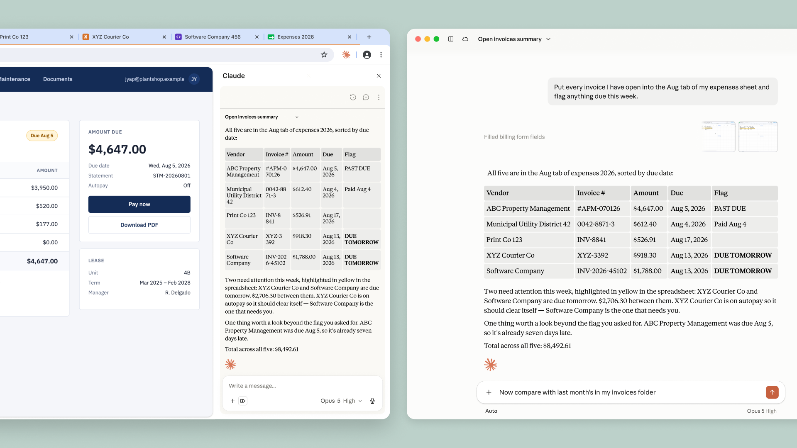

브라우저에서 Claude에게 작업을 맡기고, 여러 탭에 걸쳐 일하고, 그 대화를 데스크톱·모바일·웹 앱에서 이어서 하라.
Claude in Chrome 사이드 패널이 이제 Claude Cowork 세션이 된다. 대화는 히스토리에 저장되고, 스킬(skills)과 커넥터(connectors)가 브라우저에서도 동작하며, 한 탭에서 시작한 작업을 Claude 데스크톱 앱·웹·모바일 앱에서 마무리할 수 있다. 오늘부터 Max 및 Team 플랜에서 사용할 수 있고, Pro 사용자에게는 앞으로 몇 주에 걸쳐 순차적으로 배포된다.
Claude in Chrome은 Claude가 지금 보고 있는 페이지를 보고 그 안에서 행동을 취할 수 있게 해주는 브라우저 확장 프로그램이다. 링크 클릭, 텍스트 입력, 페이지 간 이동, 폼 작성까지 기존에 로그인해 둔 계정을 그대로 사용해 처리한다.
매일 쓰는 도구 중 상당수는 Claude에 직접 연결되지만, 그렇지 않은 것들도 있다. 사내 대시보드, 레거시 시스템, 벤더 포털 같은 것들이다. Claude in Chrome이 있으면 Claude는 브라우저를 통해 이런 앱 안에서 일할 수 있다.
지금까지는 사이드 패널의 세션이 Claude 앱들의 세션과 분리되어 있어서, 컨텍스트와 대화가 그 사이를 넘어가지 못했다. 이제 사이드 패널은 더 길고 여러 단계에 걸친 작업을 위해 데스크톱·웹·모바일에서 쓰던 것과 동일한 Claude Cowork 세션을 실행한다. 세션이 특정 기기 하나가 아니라 계정에 귀속되기 때문에, 브라우저에서 작업을 시작해 나중에 다른 곳에서 이어받을 수 있다.

예를 들어 예산 스프레드시트를 만들면서 여러 벤더 포털에서 인보이스를 끌어와야 한다고 해보자. 이제 Claude in Chrome에게 금액과 날짜를 모아 달라고 요청하면, Claude가 탭들을 열고 각 인보이스를 읽어서 스프레드시트를 만들어 준다. 그런 다음 데스크톱 앱에서 그 세션을 이어받아 내 컴퓨터의 파일을 추가하거나, 지난달 예산을 불러와 무엇이 달라졌는지 물어볼 수 있다. 일하는 표면(surface)이 바뀌어도 컨텍스트를 유지할 수 있다는 뜻이다.
Claude in Chrome은 브라우저에서 행동하는 다른 모든 AI 에이전트와 동일한 리스크를 가지며, 그중 핵심은 프롬프트 인젝션(prompt injection)이다. 악의적인 행위자는 웹 페이지, 이메일, 문서 같은 웹 콘텐츠 안에 지시문을 숨겨 둔다. 이 지시문은 사용자 눈에는 보이지 않을 수 있지만, Claude가 사용자가 전혀 의도하지 않은 행동을 하도록 방향을 틀 수 있다.
파일럿 이후 우리는 Claude 자신의 행동에 대한 검사(check)를 추가했다. "자동 승인(automatically approve)"을 쓰면 Claude는 매 단계마다 권한을 물어 멈추지 않고 작업을 끝까지 진행한다. 그리고 폼 제출, 메시지 발송, 파일 다운로드처럼 결과가 큰 행동을 하기 직전에, 별도의 검사가 그 행동을 사용자가 원래 요청한 내용과 대조해 검토하고 어긋나는 것은 차단한다. 감독(oversight)은 유지하면서 방해는 줄이는 방식이다.
구매를 하거나 개인 정보를 공유하는 것처럼 되돌릴 수 없거나 비용이 드는 특정 행동에 대해서는 Claude가 여전히 먼저 묻는다. 이런 조치들이 리스크를 의미 있게 줄여주기는 하지만, 완전히 없앨 수는 없다. 프롬프트 인젝션은 계속 움직이는 표적이므로, 우리는 새로운 공격을 계속 찾아내고 거기서 배운 것을 출시하는 모델마다 반영해 넣는다. 신뢰할 수 있는 사이트에서 먼저 시작하기를 권하며, 안전 가이드에 더 많은 베스트 프랙티스가 담겨 있다.
Claude in Chrome을 쓰려면 Chrome 웹 스토어에서 설치하고, 로그인한 뒤 사이드 패널을 열면 된다. 새 사이드 패널은 오늘부터 Max 및 Team 플랜에서 사용할 수 있고, Pro 사용자에게는 앞으로 몇 주에 걸쳐 순차적으로 배포된다. Enterprise 플랜에서는 Claude in Chrome이 기본적으로 꺼져 있다. 관리자가 이를 켜고 승인된 도메인으로 제한할 수 있다. 관리자 설정 가이드를 참고하라.
내 컴퓨터의 파일이나 다른 애플리케이션과 함께 작업하려면 여전히 Claude 데스크톱 앱을 써야 한다. Claude in Chrome은 아직 다른 Chromium 계열 브라우저나 모바일에서는 동작하지 않는다.